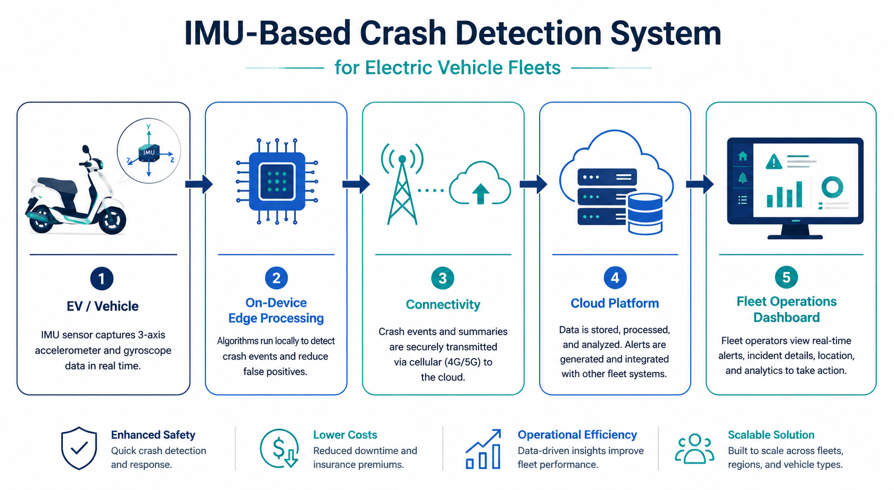
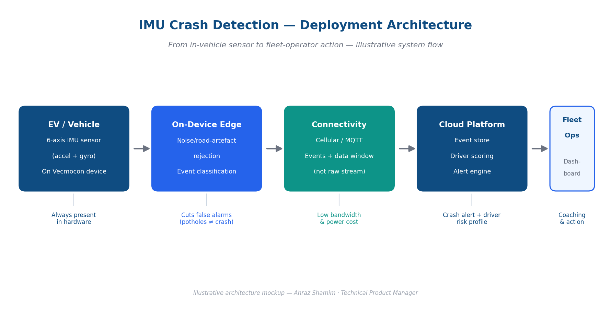
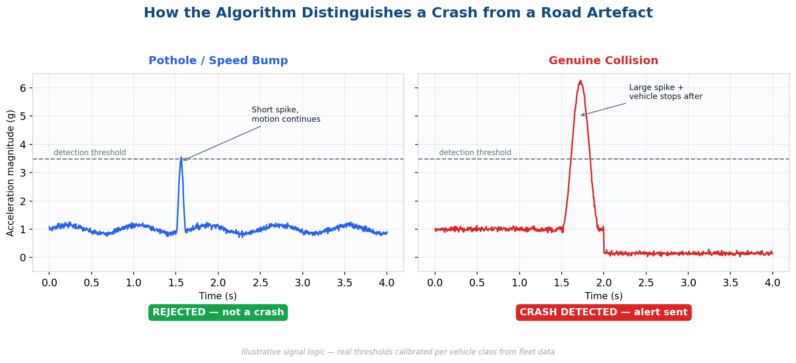
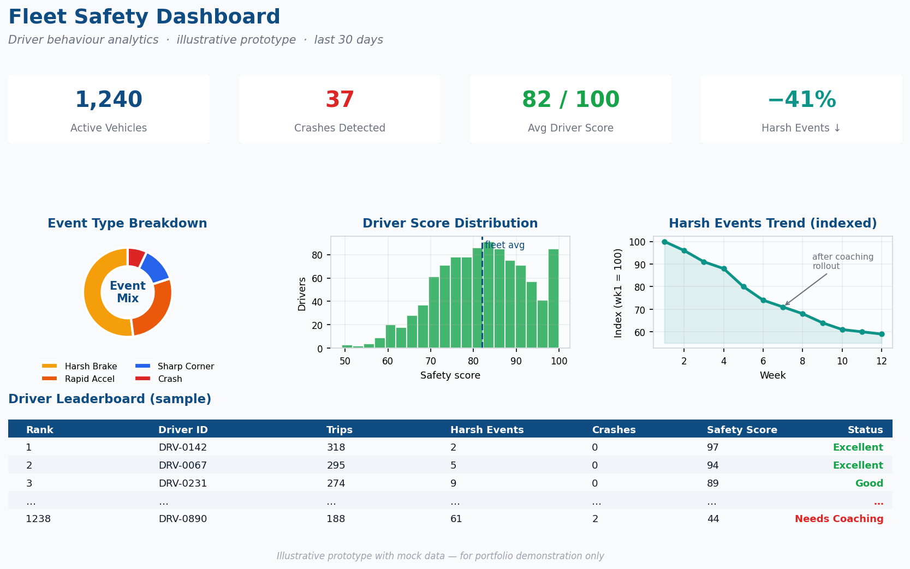
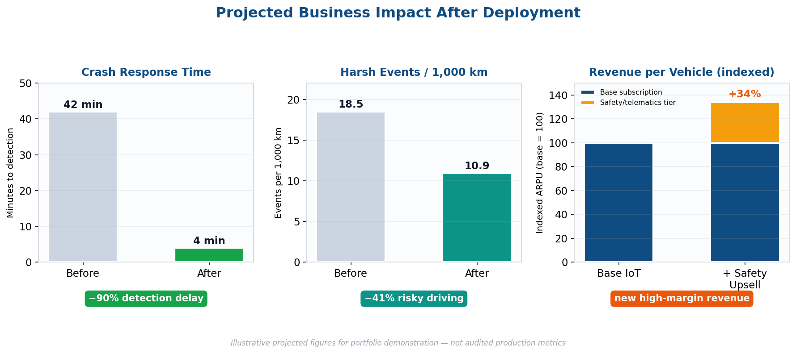

Case study · Monetising deployed hardware
IMU Crash Detection &
Driver Behaviour Analytics
The sensor was already in every device we'd ever shipped. Nobody was reading it. This project turned that dormant 6-axis IMU into crash alerts, driver risk scores and the foundation of an insurance-telematics revenue line — with no new hardware, deployed over the air to vehicles already in the field.
- My role
- Product proxy — business case, PRD, stakeholder alignment
- Company
- Vecmocon Technologies
- Product line
- ₹40L/month IoT platform
- Play type
- Pure software/analytics on existing hardware
The gap
Vecmocon's IoT platform powers electric two- and three-wheeler fleets across India. Before this project it tracked where a vehicle was and how charged it was — but had no awareness of how it was being driven, or whether it had crashed. That was a strategic gap on three fronts:
- Safety blind spot. A crash could go undetected for a long time, delaying emergency response and exposing fleet operators to liability and reputational damage.
- Untapped data value. The IMU was already present in the hardware and its data was simply unused, while competitors were beginning to offer driver-scoring and crash detection as premium features.
- No behavioural lever. Fleet operators had no objective way to identify risky drivers, coach them or reward safe ones — a direct driver of accident rates, vehicle wear and insurance cost.
The hardware to detect crashes and risky driving already existed in the field. The opportunity was a pure software and analytics play — high margin, deployable over the air, and immediately monetisable. That framing is what won it a roadmap slot: zero BOM cost, zero manufacturing dependency, revenue against an installed base.

Five stages, one design rule: escalate only what matters. Click to enlarge.
Business & revenue impact
Direct revenue opportunities
Insurance telematics
Objective crash and driving data enables usage-based-insurance partnerships, where insurers pay for verified risk data — recurring and high margin.
Premium safety tier
Crash detection and driver scoring packaged as a paid add-on above the base IoT subscription, lifting average revenue per vehicle.
Fleet-safety SaaS
Driver leaderboards, coaching reports and risk dashboards become a sellable module to large fleet operators.
Indirect and defensive value
| Impact area | Mechanism | Business outcome |
|---|---|---|
| Customer retention | Safety features raise switching cost | Lower churn on the ₹40L/month line |
| Insurance premiums | Verified safe-driving data | Lower fleet insurance costs → stronger value proposition |
| Vehicle lifetime | Reduced harsh driving via coaching | Less battery and component wear, lower warranty cost |
| Brand & trust | Faster crash response | Differentiation vs. location-only competitors |
How it works — the detection pipeline
The feature runs as a layered pipeline on the in-vehicle device, escalating only meaningful events to the cloud. The architecture is the product decision: classify on the device, transmit events not streams.

Each stage exists to remove load from the next one. Illustrative architecture diagram.
| Stage | What happens | Why it's there |
|---|---|---|
| 1 · IMU raw data | 6-axis accelerometer + gyroscope sampled continuously on the device | Already present in hardware — zero BOM cost |
| 2 · On-device filtering | Noise and road-artefact rejection using duration, multi-axis correlation and post-event motion checks | Cuts false alarms before they ever reach a customer |
| 3 · Event classification | Signatures matched to crash, harsh braking, rapid acceleration and sharp cornering, with severity scored via jerk and deceleration profiles | Turns signal into something a person can act on |
| 4 · Cloud + alert | Only classified events plus a short data window are sent up; crashes alert immediately, behaviour events aggregate into a score | Keeps bandwidth and storage cost survivable at fleet scale |
The hard part: a pothole is not a crash
A speed bump and a collision both produce a sharp acceleration spike. If your detector is a magnitude threshold, every bad road in India is a crash — and a crash alert that cries wolf is worse than no crash alert at all, because the operator learns to ignore it.
The discriminator isn't the peak. It's what happens after the peak. A pothole produces a short spike and the vehicle carries on moving. A collision produces a large spike and then the vehicle stops. Adding duration, multi-axis correlation and a post-event motion check turns an unusable threshold into a reliable classifier.

Illustrative signal logic — real thresholds are calibrated per vehicle class from fleet data.
I co-defined an acceptable false-positive rate with fleet customers, before building thresholds. That inverted the usual order — normally engineering tunes, then customers complain. Agreeing the number first made it an acceptance criterion rather than an opinion, and it settled the "is this good enough to ship" argument once instead of every release.
Driver scoring logic
- Each detected event is weighted by type and severity — a crash is not a sharp corner.
- Events are normalised against vehicle-class baselines. A loaded e-rickshaw and a light scooter produce entirely different signatures for the same driving; scoring them on one scale would penalise a whole vehicle class for existing.
- The result aggregates into a rolling driver score that fleet operators can rank, coach and reward against.

Illustrative prototype with mock data — for portfolio demonstration only.
The leaderboard is the part that makes the analytics operational. A risk score nobody ranks is a number in a database; a ranked list with a "needs coaching" flag is a Monday-morning action for a fleet supervisor. Designing for the action rather than the insight is what stopped this becoming another dashboard nobody opens.
Stakeholder alignment
Delivering a safety-critical analytics feature meant aligning five groups with genuinely competing priorities. As product proxy I owned that alignment, and every row below was a real trade-off rather than a formality.
| Stakeholder | Their priority | How I aligned them |
|---|---|---|
| Engineering / embedded | Device compute & power limits | Agreed on-device event detection over raw-data streaming, to fit within constraints |
| Fleet customers | Trustworthy, low-false-alarm alerts | Co-defined the acceptable false-positive rate before thresholds were built |
| Data / cloud team | Bandwidth & storage cost | Stream only events plus short data windows, never continuous raw IMU |
| Leadership / sales | A monetisable, differentiated feature | Framed the roadmap around insurance and premium-tier revenue |
| OEM partners | Reliability & brand safety | Set explicit accuracy criteria and a phased rollout |
I translated these into PRDs and user stories with explicit acceptance criteria, then used a RICE-style assessment of customer impact to sequence them — crash detection first, given its safety weight and its direct line to insurance revenue.
Projected impact

Illustrative projected figures for portfolio demonstration — not audited production metrics.
Outcome & strategic value
- A safety-critical, real-time detection feature delivered within device compute and bandwidth limits — the constraint that dictated the whole architecture.
- Foundation laid for an insurance-telematics revenue stream and a premium safety tier above the base subscription.
- Retention strengthened on a ₹40L/month product line by deepening platform value for fleet customers including TATA AutoComp.
- A repeatable strategic pattern proven: extract monetisable value from sensors already deployed in the field. That's the part I'd take anywhere.
What I'd take to the next one
The most valuable roadmap items are often already paid for. Before arguing for new hardware, audit what the installed base can already sense and nobody is reading — the business case writes itself when the BOM cost is zero and the delivery mechanism is an OTA campaign you already own. And when a feature's credibility rests on a threshold, negotiate the acceptable error rate with the customer before you build, not after they complain.